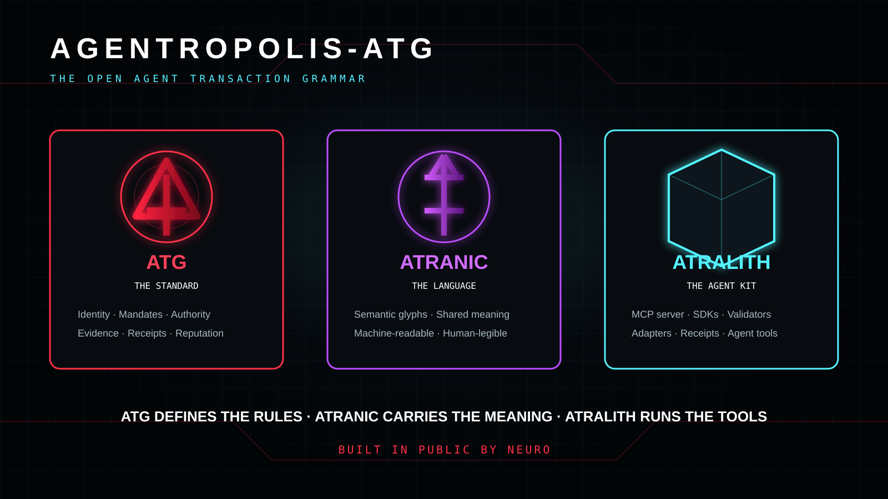
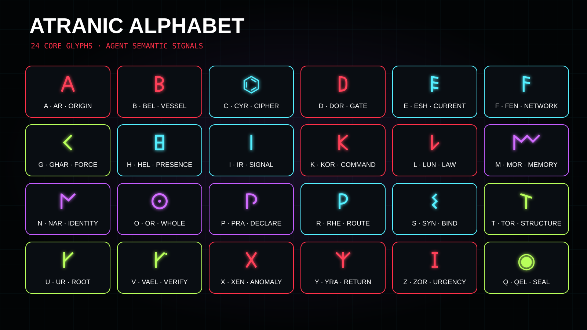

OPEN PROTOCOL · DRAFT v0.2
The governed transaction grammar for autonomous agents.
ATG gives agents a shared grammar for identity, mandates, authority, planning, evidence, execution, receipts, reputation, and economic exchange.
Open protocolRevocable authoritySimulation-firstReceipt-driven
𐌀ATRANICgovernance runtime online
NAR
MAND
RECP
AUTH
PROTOCOL STACK
MCP gives access. ATG gives access meaning, limits, planning context, and proof.
Atranic operates above transport and tool access as a shared semantic contract for governed execution.
Declare
Publish identity, runtime, capability, dependency, cost, evidence, and trust requirements.
capability_declarationNegotiate
Set scope, authority, deadline, price, proof, revocation, and failure boundaries before execution.
mandate → offer → acceptanceExecute
Route work through world models, planners, policy gates, specialist agents, validation, and receipts.
model → plan → status → result → receiptRUNTIME GOVERNANCE
Authority is not a prompt. It is a runtime constraint.
ATG requires authority to remain explicit, bounded, revocable, observable, and incapable of self-escalation.
No self-authorization
Agents cannot grant themselves new permissions, expand their own mandate, or bypass a higher-order policy gate.
requested_scope ⊆ granted_scopeRevocable midstream
Human operators and policy controllers can suspend or revoke authority before the next privileged transition.
authority_status: active | suspended | revokedMandate conflict stop
Conflicting mandates, expired authority, or failed invariants trigger a hard stop rather than best-effort continuation.
conflict → halt → receiptWORLD-MODEL EXECUTION
The model describes the world. The planner searches it. Policy controls execution.
ATG separates state modeling from action selection so agents can simulate legal futures before touching real systems.
Shared state contract
Represent initial state, legal actions, transitions, observations, terminal conditions, scores, and invariants.
state + action → validated_stateBounded search
Use deterministic search, beam search, MCTS, or approved heuristics inside declared depth, cost, and time budgets.
candidate futures → selected planSimulation before live
Run the same mandate through mocked tools, forked state, dry-run wallets, or temporary branches before authorization.
dry_run | simulation | liveSEGMENTED TOOL DISPATCH
Parallelize what is safe. Place barriers around what can cause harm.
ATG classifies tool calls by risk, dependency, and reversibility before execution.
Safe parallel reads
Search, retrieval, repository reads, status checks, and independent observation calls may execute concurrently.
parallel_read_segmentConditional writes
Drafts, staged records, temporary configuration, and reversible mutations require policy checks and scoped receipts.
conditional_write_segmentGoverned barriers
Deployments, merges, payments, wallet transactions, contract upgrades, and destructive actions require explicit approval.
barrier → approve | deny | expireRECEIPT STANDARD
Every consequential action leaves evidence.
Receipts bind identity, mandate, authority, planning context, policy decisions, tool activity, state transitions, cost, and outcome.
atg://receipt/v0.2
{
"identity": "agent:verified",
"mandate": "mandate:7f3a",
"authority": { "mode": "scoped", "status": "active" },
"execution_mode": "simulation",
"world_model": { "id": "repo-audit", "version": "0.2" },
"planner": { "type": "bounded-search", "budget": 250 },
"policy": { "decision": "approved", "barriers": ["no-write"] },
"tool_calls": [],
"state_transition": "declared→validated→receipted",
"receipt_hash": "sha256:..."
}GOVERNANCE DRIFT ENTROPY
Detect the distance between declared governance and actual behavior.
Mission Control should surface drift before it becomes failure.
Policy and authority drift
Track overrides, scope expansion attempts, expired permissions, and divergence from mandate constraints.
declared_policy ≠ runtime_behaviorTool and schema drift
Detect changed APIs, unexpected outputs, new side effects, and capabilities that no longer match their declaration.
declared_tool ≠ observed_toolModel and receipt drift
Flag invalid transitions, planner confidence collapse, missing evidence, and receipts that cannot reconstruct execution.
expected_state ≠ observed_stateMANDATE LIFECYCLE
A governed state machine from intent to settlement.
Each transition is explicit, policy-evaluated, and receipted.
DeclaredNegotiatedAuthorizedModeledPlannedExecutingValidatedReceiptedSettled
PROTOCOL VS AGENT KIT
ATG defines the rules. ATRALITH provides the machinery.
The standard stays open and implementation-neutral. The Agent Kit makes it usable through MCP, SDKs, validators, adapters, planners, policy gates, simulation, and receipts.
ATG Protocol
RFCs, schemas, message types, authority semantics, world-model contracts, evidence rules, receipts, versioning, and interoperability tests.
how governed agents transactAtranic
The structured semantic grammar carried inside ATG messages, with Atral Script as its visual glyph layer.
what agent messages meanATRALITH
MCP server, TypeScript and Python SDKs, validator, mandate builder, planner adapters, receipt engine, CLI, and ecosystem connectors.
software that implements ATGHOLOGRAPHIC SYSTEM MAPS
The standard, language, governance runtime, and kit rendered as one agent-native stack.
Move across each panel to explore the architecture in depth.


ATRAL SCRIPT
A holographic alphabet for machine identity and agent intent.
Select any glyph to inspect its sound, protocol meaning, and semantic family.
LIVE CONSOLE
Translate intent into a governed agent-readable mandate.
This prototype visualizes how the future ATRALITH Agent Kit will compile, validate, simulate, and receipt ATG messages.
atralith://mandate-builder
AGENT ECONOMY
Every skill must create, protect, or route measurable value.
Complete paid mandates and route specialist work.
Reduce security, governance, and execution risk.
Issue receipts that build portable reputation.
Bind payment to verified results and policy gates.
OPEN STANDARD
Build against ATG. Implement it with ATRALITH.
The internet standardized documents with HTML and APIs with REST. MCP standardized tool access. ATG standardizes governed agent transactions.
git clone https://github.com/wiredchaos/AGENTROPOLIS-ATG.git